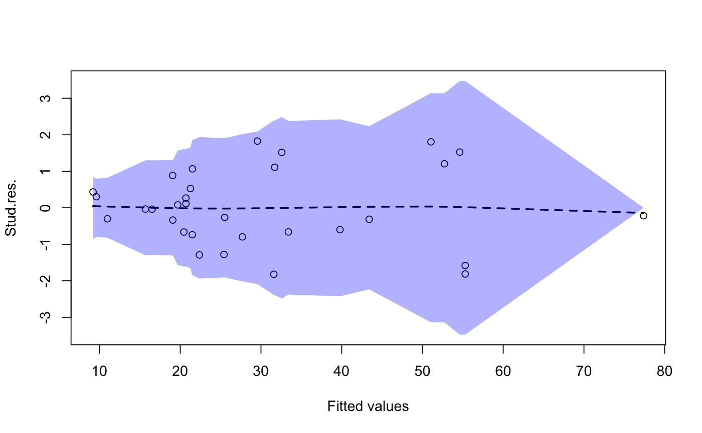

Plots a standardaized residual
Plots a standardized residual plot from an lm or glm object and provides additional graphics to help evaluate the variance homogeneity and mean.
# S3 method for default residualplot(x, y = NULL, candy = TRUE, bandwidth = 0.3, xlab = "Fitted values", ylab = "Std.res.", col.sd = "blue", col.alpha = 0.3, ylim = NA, ...) # S3 method for lm residualplot(x, y, candy = TRUE, bandwidth = 0.3, xlab = "Fitted values", ylab = "Stud.res.", col.sd = "blue", col.alpha = 0.3, ...) # S3 method for glm residualplot(x, y, candy = TRUE, bandwidth = 0.4, xlab = "Fitted values", ylab = "Std. dev. res.", col.sd = "blue", col.alpha = 0.3, ...) residualplot(x, y = NULL, candy = TRUE, bandwidth = 0.3, xlab = "Fitted values", ylab = "Std.res.", col.sd = "blue", col.alpha = 0.3, ylim = NA, ...)
Arguments
| x | lm object or a numeric vector |
|---|---|
| y | numeric vector for the y axis values |
| candy | logical. Should a lowess curve and local standard deviation of
the residual be added to the plot. Defaults to |
| bandwidth | The width of the window used to calculate the local smoothed version of the mean and the variance. Value should be between 0 and 1 and determines the percentage of the window width used |
| xlab | x axis label |
| ylab | y axis label |
| col.sd | color for the background residual deviation |
| col.alpha | number between 0 and 1 determining the transprency of the standard deviation plotting color |
| ylim | pair of observations that set the minimum and maximum of the y axis. If set to NA (the default) then the limits are computed from the data. |
| ... | Other arguments passed to the plot function |
Value
Produces a standardized residual plot
Details
The y axis shows the studentized residuals (for lm objects) or standardized deviance residuals (for glm objects). The x axis shows the linear predictor, i.e., the predicted values for lm objects.
The blue area is a smoothed estimate of 1.96*SD of the standardized residuals in a window around the predicted value. The blue area should largely be rectangular if the standardized residuals have more or less the same variance.
The dashed line shows the smoothed mean of the standardized residuals and should generally follow the horizontal line through (0,0).
Solid circles correspond to standardized residuals outside the range from [-1.96; 1.96] while open circles are inside that interval. Roughly 5
See also
rstandard, predict
Examples
# Linear regression example data(trees) model <- lm(Volume ~ Girth + Height, data=trees) residualplot(model)model2 <- lm(Volume ~ Girth + I(Girth^2) + Height, data=trees) residualplot(model2)